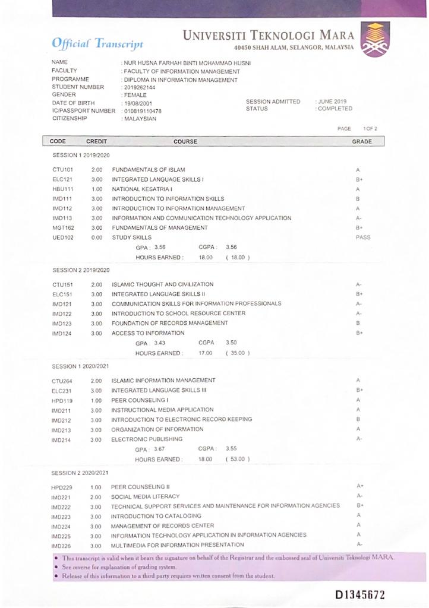
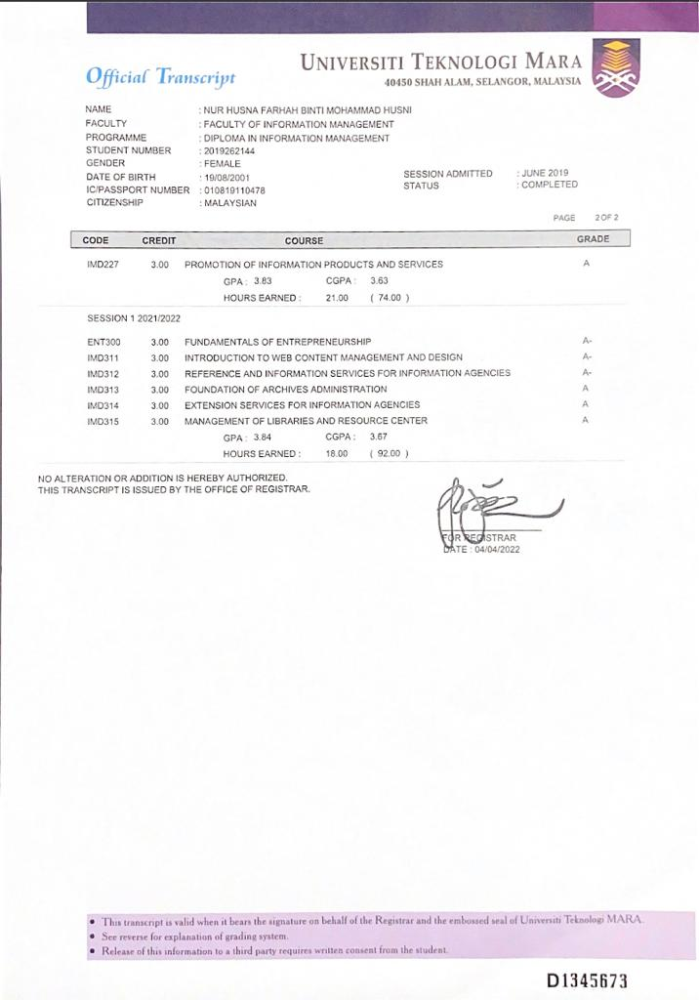

Home
Biodata
Education
Experience
Video
Contact
Student
Education
Primary School
SK Bukit Tumboh
Secondary School
SMK Ibrahim Fikri
My course are graphic computer and art. I learn these courses in 2 years.
Diploma
Uitm Campus Machang,Kelantan
I'm graduated with Diploma of Information Management. I took two and a half years to finish my Diploma.
Information Management
Bachelor
Uitm Campus Puncak Perdana
I'm graduated with Bachelor of Information Science (Hons.) Library Management. I took two and a half years to finish my Degree.
Library Management
 